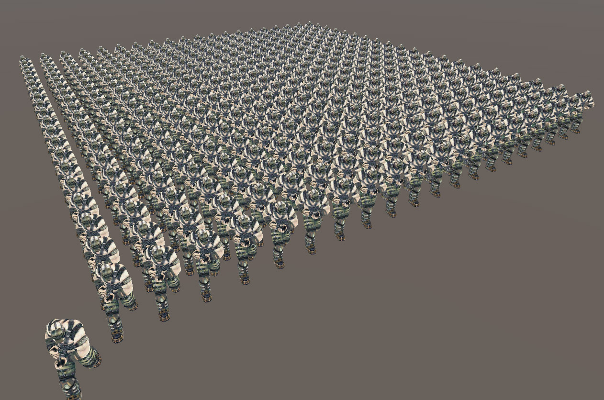
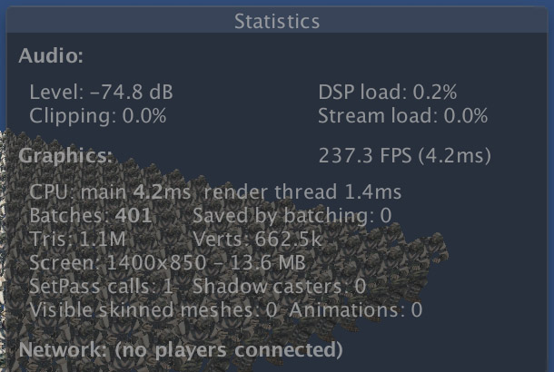
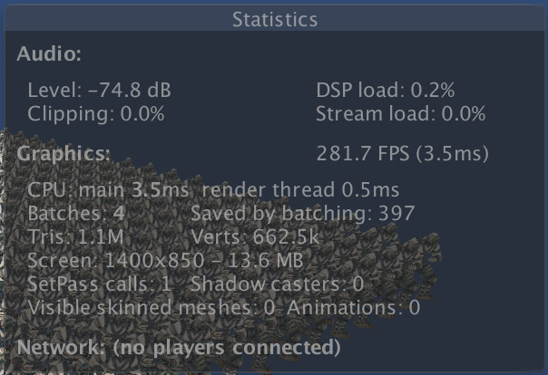
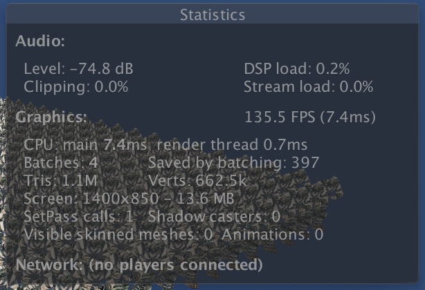

GPU Instancing
2016-12-4
今天对 GPU Instancing 做了一个测试，这个功能的作用是绘制大量相似的模型时可以最大限度的减少图形 API 的调用。所谓相似，就是位置、旋转、颜色等等属性的微小差异。为了方便测试，本次测试是基于最近写的一个 GPU Skinning 工程之上的。

图中一共有401个需要绘制的模型，按照常规的渲染，就要消耗401个 DrawCall：

而使用 GPU Instancing 后 DrawCall 变成了 4 个：

想要达到这样的效果，代码的修改并不是很多，由于我的测试用例中，各模型之间的差异只有坐标，所以只需要设置每个模型的坐标即可，像是这样：
// App Code
// renderers 数组里存储的是每个模型的 MeshRenderer
int shaderPropId_pos = Shader.PropertyToID("_ModelPos");
MaterialPropertyBlock mtrlPropBlock = new MaterialPropertyBlock();
int numRenderers = renderers.Length;
for(int i = 0; i < numRenderers; ++i)
{
Vector3 modelPos = renderers[i].transform.position;
mtrlPropBlock.SetVector(shaderPropId_pos, modelPos);
renderers[i].SetPropertyBlock(mtrlPropBlock.SetVector);
}
// Shader Code
// 这一步是蒙皮操作，没有任何变化
float4 pos =
mul(_Matrices[v.tangent.x], v.vertex) * v.tangent.y +
mul(_Matrices[v.tangent.z], v.vertex) * v.tangent.w;
// 原来这里是直接和 MVP 矩阵相乘，现在改为世界坐标系下的偏移
o.vertex = mul(unity_ObjectToWorld, pos);
o.vertex.xyz += UNITY_ACCESS_INSTANCED_PROP(_ModelPos).xyz;
o.vertex = mul(UNITY_MATRIX_VP, o.vertex);
对比两张 Statistics 窗口的参数可以看到 DrawCall 降低了很多，fps 增加了。于是乎我想是否能够使用 Graphics.DrawMesh 方法来进一步提速渲染，但是测试结果却恰恰相反：

可以看到消耗反而增加了不少，这些开销完全是 Graphics.DrawMesh 带来的。
至于手机上的测试结果，一开始感觉 DrawCall 并没有合并，然后 Frame Debug 了一下，果然发现每一个模型还是单独绘制的，并未找到 glDrawElementsInstanced 这样的 API。不知是 Unity 版本的原因，还是 IOS 版本不是最新的。今天就先不管了，升级一次时间太久，等以后自然升级到高版本后再测试下。